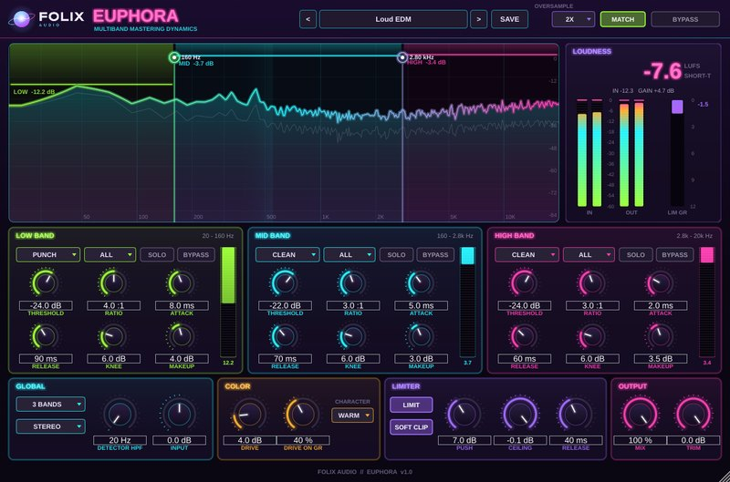
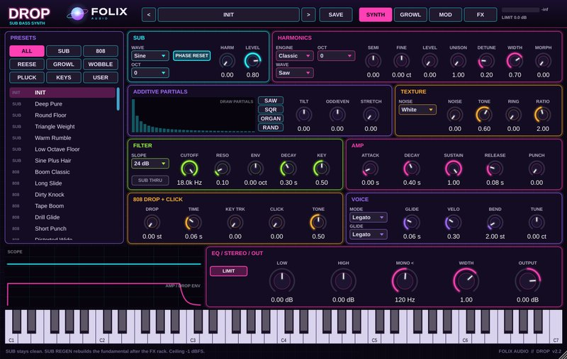
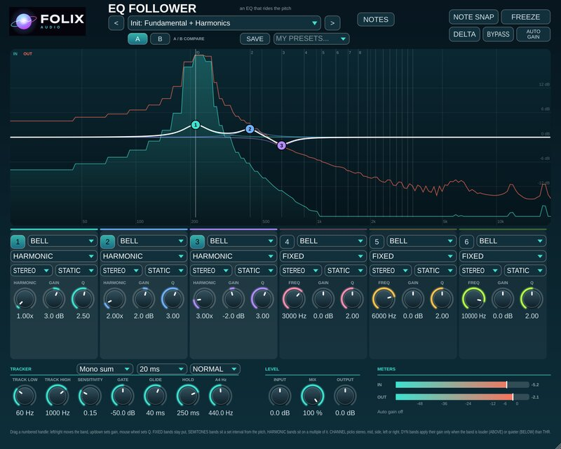
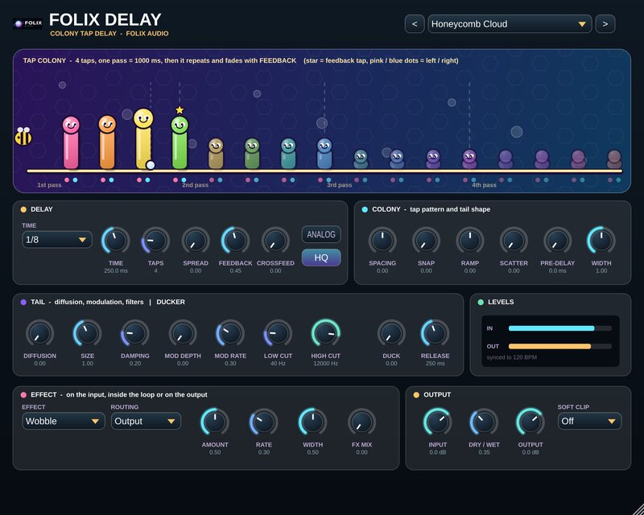
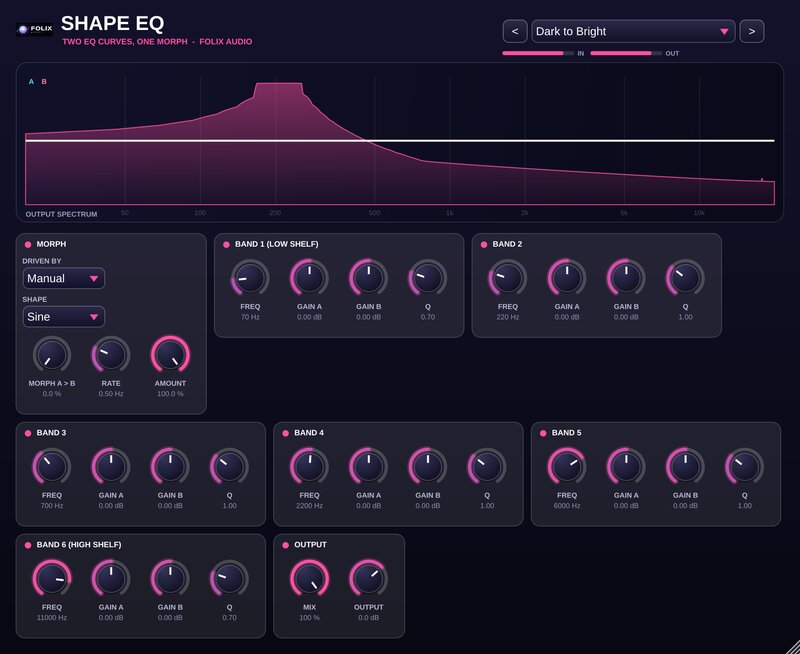

The plugin constellation
Synths and effects for VST3 and AU hosts. Five plugins are available now: Euphora (multiband mastering dynamics effect) and Drop 2 (sub-bass instrument), each with a free demo, plus EQ Follower, Delay and Shape EQ at $29.99. Falling Waves and Backwash are in development.
5 plugins · all available now

Folix Euphora
A multiband mastering dynamics plugin: per-band compression, warm color and a clean limiter for loud, polished masters.

Folix Drop 2
A sub-bass instrument for fat, lush basslines and deep sub that fills the low end.

Folix EQ Follower
EQ bands that ride the note: boost the 2nd harmonic and it stays there as the pitch moves.

Folix Delay
A two-stage delay: a COLONY of taps, then a filtered, diffused, modulated feedback loop with soft HQ repeats and ducking.

Folix Shape EQ
Two EQ curves, A and B, with a morph you drive by hand, by LFO or by input level.
Studio news
Updates, new releases and tips from the Folix studio. No spam, ever.
Occasional updates only. Unsubscribe any time.